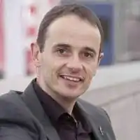
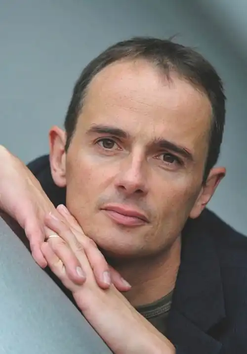

Штефан Ґеммель (народився 30 січня 1970, Морбах) — німецький автор дитячих та юнацьких книг.
Відомими книгами Ґеммеля є багатотомна серія "У знаку чарівної кулі" та трилогія "Шаттенграйфер".
Ґеммель дає читання, вечори читання та майстер-класи, які проводить у школах і бібліотеках. Він значною мірою залучає свою аудиторію відповідно до історії, яку читає, наприклад, у формі рольових ігор, спонтанного театру чи мовних експериментів. 12 червня 2012 року разом із "Leserat Service" він встановив світовий рекорд, коли двома читаннями перед більш ніж 5000 дітьми в Кобленці охопив найбільшу аудиторію на сьогодні для читання одного автора та був включений до Книгу рекордів Гіннеса вдалося. У вересні 2015 року йому знову вдалося встановити світовий рекорд, знову ж таки у співпраці з "Bookworm Service": найшвидший читацький тур у світі: 82 читання за 13 днів, 10 годин і 7 хвилин по всій Німеччині. За всім цим спостерігав Інститут рекордів Німеччини. Там також були встановлені офіційні міжнародно порівнювані правила. У травні 2018 року він побив власний рекорд 2012 року, знову ж таки з "Bookworm Service", коли він читав для та з 5542 дітьми на Commerzbank Arena у Франкфурті. У 2021 році він встановив третій світовий рекорд читання (знову завдяки службі книжкових хробаків), коли організував "найбільше читання під час автопробігу дітей" із 382 учасниками з двох шкіл у його рідному місті Морбах за найсуворіших умов Корони. У 2014 році як референт з питань культури він брав участь у поїздці делегації прем'єр-міністра Малу Дрейєра до Китаю, де читав китайським школярам і студентам. У 2016 році був членом журі фінального туру "Всеукраїнського конкурсу читців". На додаток до своєї роботи як автора, Ґеммель проводить літературні проекти та письменницькі майстерні. Він є членом ПЕН-центру Німеччини та Асоціації німецьких письменників (регіональна група Рейнланд-Пфальц). Його книги перекладені 21 мовою. Ґеммель є батьком двох дочок і живе один у Лаудерті (Хунсрюк).